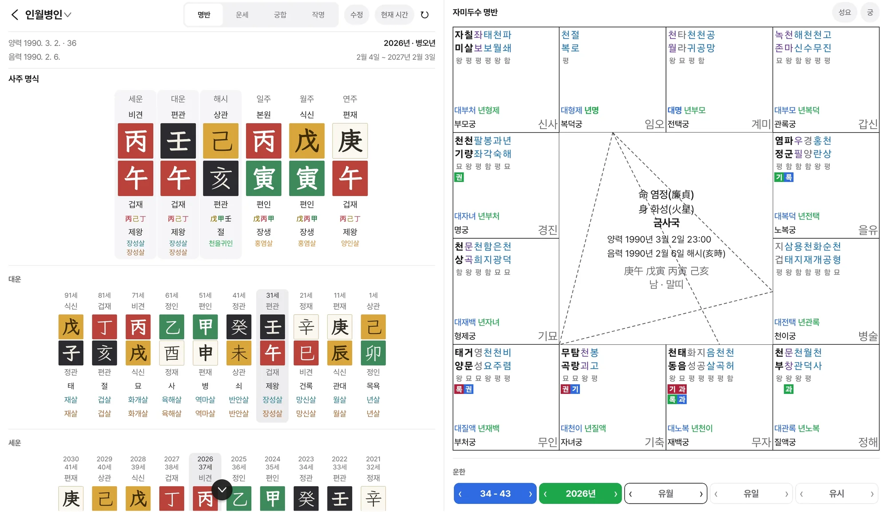
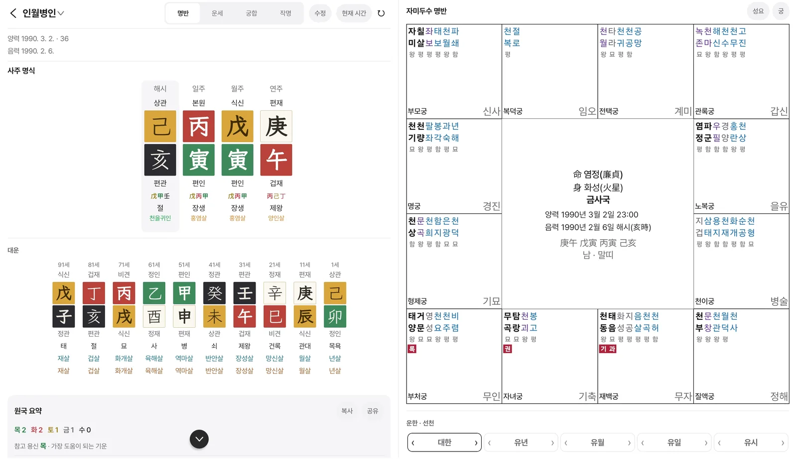
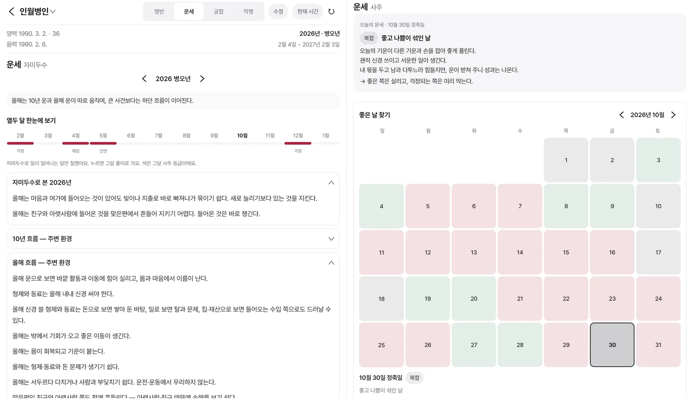
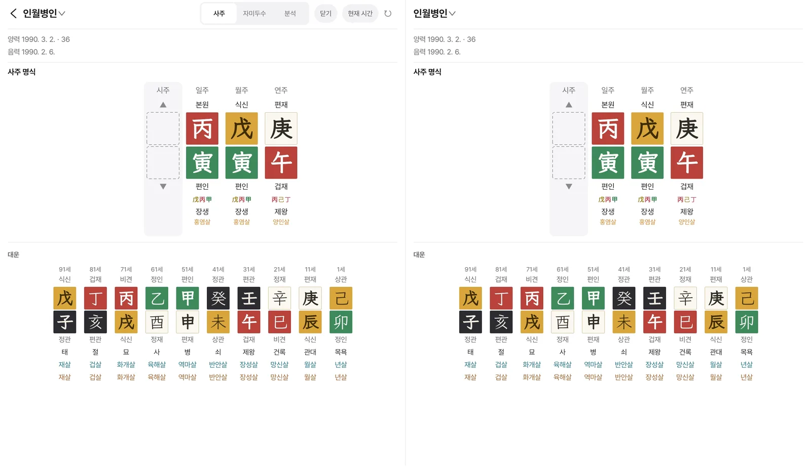
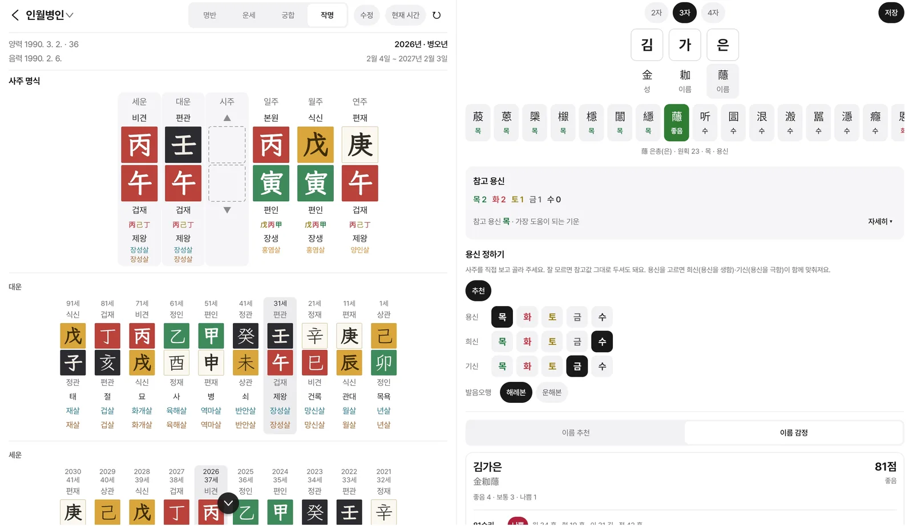

사주 · 자미두수 만세력
명식은 정확하게,
풀이는 한 화면에.
진태양시로 세운 사주 명식과 12궁 자미두수 명반을 나란히 놓고, 대운에서 시운까지 두 학문이 같은 때를 함께 봅니다.
출시 준비 중 Android · Google Play
유튜브에서 먼저 보기 →

一
두 학문을 한 화면에
사주에서 대운을 고르면 자미두수 명반에도 그 대한이 따라옵니다. 반대로도 됩니다. 넓은 태블릿 화면에서는 두 판을 나란히 펼쳐 봅니다.

二
보는 것은 넓게, 풀이는 쉬운 말로

運勢
한 해 열두 달의 흐름
- 열두 달의 등급과 핵심이 되는 달
- 오늘의 운세와 아침 알림
- 그달 날마다 내 운을 칠한 좋은 날 찾기
- 태어나서 80년의 인생 그래프

宮合
두 사람을 같은 때로
- 저장한 명식에서 한 사람을 골라 나란히
- 대운부터 시운까지 두 사람이 함께 움직임
- 사주 궁합과 자미두수 궁합

作名
사주에 맞춘 이름
- 한자를 고르면 내 사주에 맞는 글자인지 바로
- 추천 이름은 점수와 근거로
- 수리·음양·오행·불용문자 감정, 감정서 PDF
三
명식을 세우는 일부터 정확하게
같은 생년월일시라도 어디서 태어났는지, 그해 어떤 표준시를 썼는지에 따라 시주가 달라집니다.
약 32분
서울에서 태어났다면 시계 시각보다 당겨지는 진태양시. 출생지 경도와 균시차까지 넣습니다.
UTC+8:30
1908~1911년과 1954~1961년의 한국 표준시와 서머타임을 따로 봅니다.
태양 황경
절기는 태양의 자리로 직접 구합니다. 해는 입춘, 달은 절입 시각에 바뀝니다.
간지 → 날짜
여덟 글자만 알아도 생년월일을 거꾸로 찾아 명식을 세웁니다.
四
상담하는 분의 명식 노트
명식 보관
카테고리로 나눠 보관하고, 중요한 명식은 지문으로 잠급니다. 명식마다 메모와 사건 기록을 남기고, 로그인하면 여러 기기에서 같은 명식을 봅니다.
가족친구동료고객유명인출산택일
무료로 시작
만세력과 자미두수 명반, 올해와 작년 운세는 무료로 볼 수 있어요. 나머지는 통합 구독으로 열리며, 처음 구독하면 7일 동안 무료로 써 볼 수 있어요.